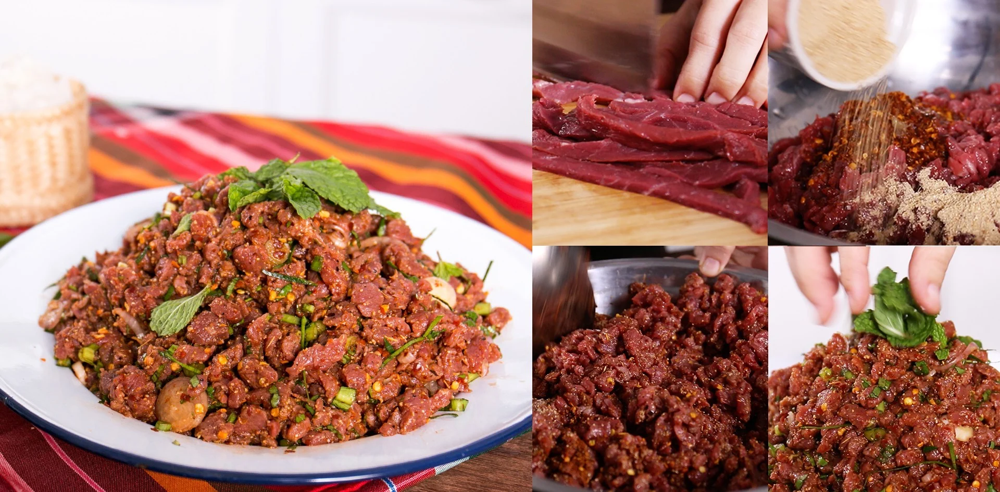
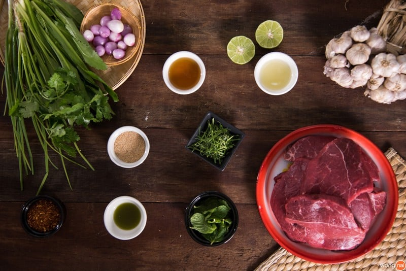
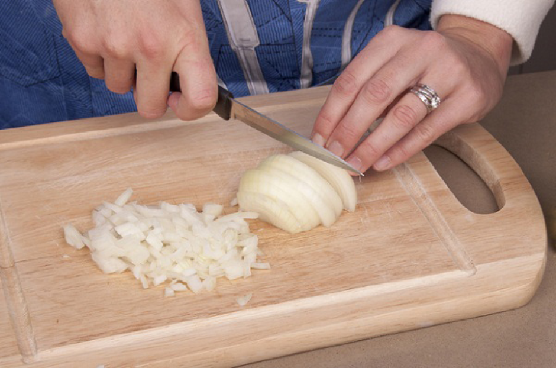
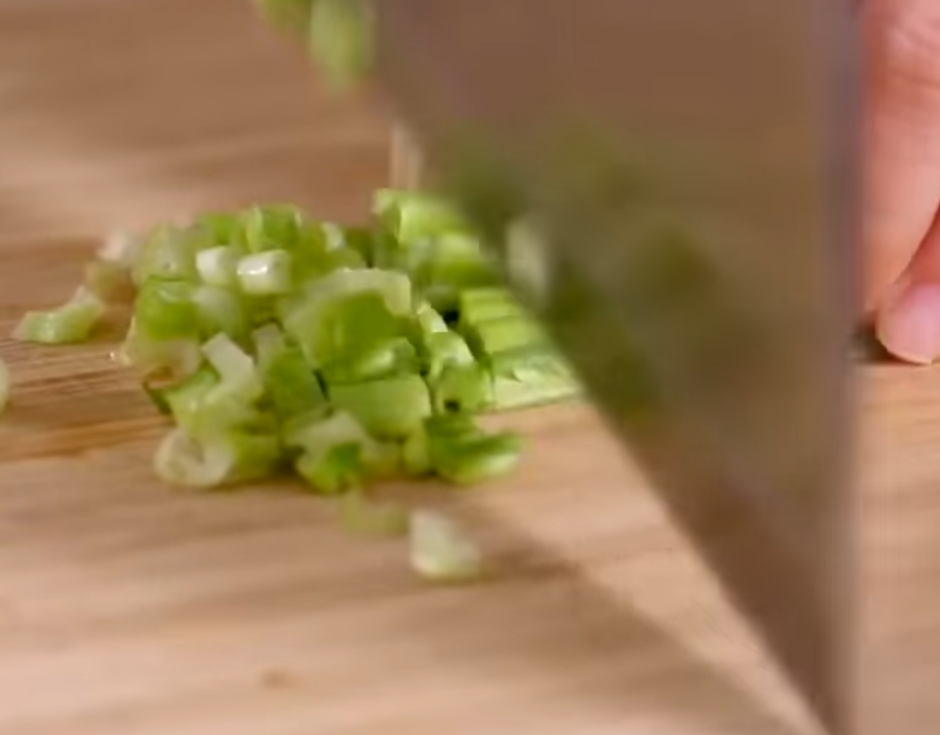
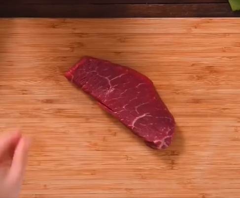
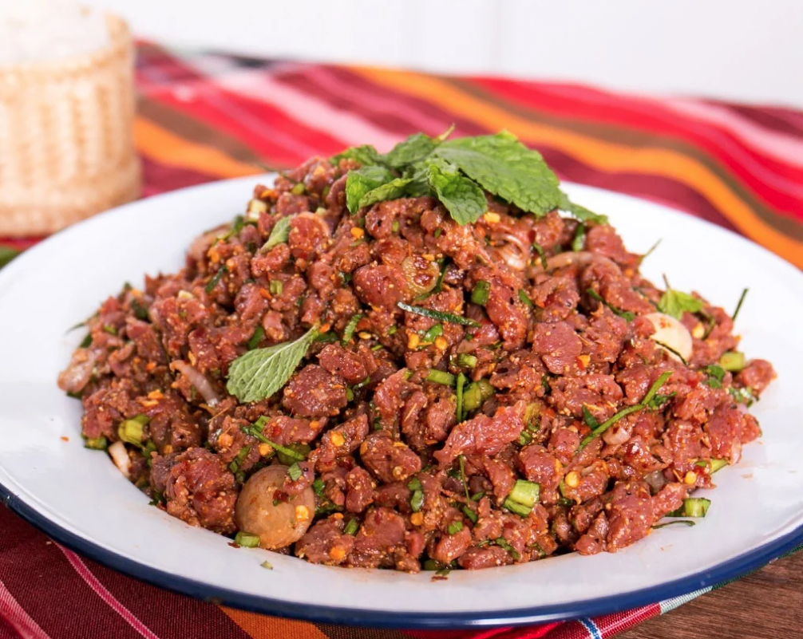

วิธีทำ “ก้อยเนื้อ” เมนูอาหารอีสาน นัวเวอร์ถึงเครื่องถึงอารมณ์!
แซ่บเด็ดจนต้องเว้าอีสาน! กับเมนู “ก้อยเนื้อ” สไตล์อีสาน นัวเวอร์ถึงเครื่องถึงอารมณ์!
มาพร้อมวิธีทำที่ทำตามได้ที่บ้าน พร้อมแล้วมาลุยกันโล้ดเด้อ!

วัตถุดิบเมนู “ก้อยเนื้อ”
วัตถุดิบ
- 1. เนื้อวัวออสเตรเลีย 500 กรัม
- 2. ข้าวคั่ว 4 ช้อนโต๊ะ
- 3. พริกแห้งป่น 4 ช้อนโต๊ะ
- 4. ดีวัว 2 ช้อนโต๊ะ
- 5. น้ำมะนาว 4 ช้อนโต๊ะ
- 6. น้ำปลา 4 ช้อนโต๊ะ
- 7. หอมแดงซอย 6 ลูก
- 8. ต้นหอมและผักชี 2 ต้น
- 9. ผักชีฝรั่ง 3 ต้น Sawtooth
- 10. ใบมะกรูดซอย 2 ช้อนโต๊ะ
- 11. ใบสะระแหน่ สำหรับโรยหน้า
- 12. ผักเคียง (ใบโหระพา / กะหล่ำปลี / แตงกวา / ผักกาดหิ่น)
วิธีทำ ก้อยเนื้อ
STEP 1 :หั่นผัก

ซอยหอมแดง

ซอยต้นหอม
STEP 2 :หั่นเนื้อ
เพื่อให้เนื้อเยื่อขาดและเนื้อวัวจะได้ไม่เหนียว ซึ่งจิ๋วหั่นเป็นชิ้นเล็ก ๆ ค่ะ เครื่องลาบจะได้เข้าเนื้อและกินง่ายค่ะ
แล้วใส่ใบมะกรูดซอย หอมแดงซอย ผักชีฝรั่งซอย ต้นหอมและผักชีซอยค่ะ แล้วคลุกเคล้าให้เข้ากันอีกครั้ง

เนื้อ

คลุกเคล้าให้เข้ากันอีกรอบ ชิมรสชาติและ
ปรุงรสได้ตามใจชอบ
STEP 3 : จัดเสิร์ฟ

พร้อมเสิร์ฟ

พร้อมนัวกันแล้วเด้อจ้าพี่น้อง!
ไม่อยากอย่างที่คิดใช่ไหมล่ะคะ เมนู “ก้อยเนื้อ” ได้สามารถทำทานได้ที่บ้าน
แบบไม่ต้องไปกินถึงอีสาน หรือถ้าเพื่อน ๆ อยาก